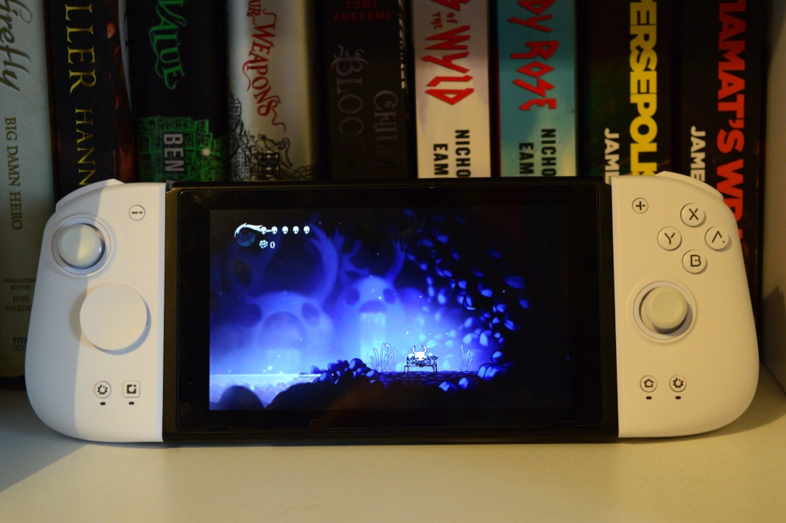
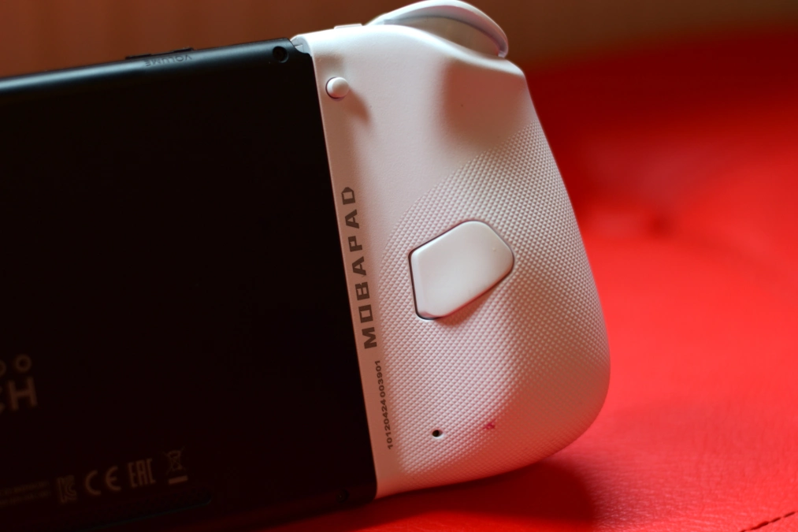
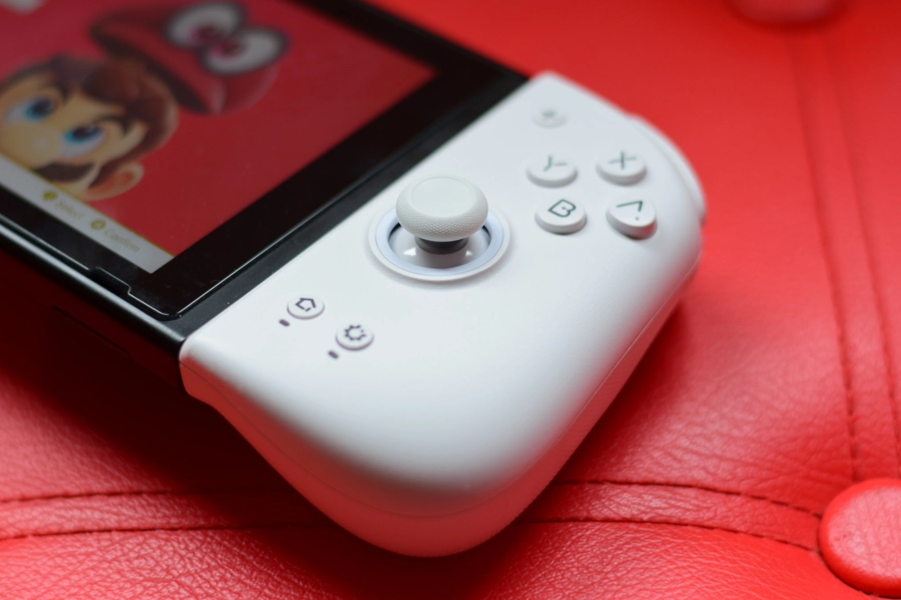

Reviews
Mobapad M6 HD Joy-Cons make the Nintendo Switch even better – Review
by Wolf’s Gaming Blog - June 14, 2024
Like many people, I find the standard Joy-Cons difficult to use as their small size cramps my hands. I’ve tried a few alternatives but most of them always came with major downsides, such as weak rumble or no gyro controls, and eventually settled on some Skull & Co grips that make playing in handheld far better, but doesn’t solve the issues I had with the cramped face buttons buttons. That’s where Chinese manufacturer Mobapad comes into the picture. You might recall the name from earlier this year when they published information about the next generation Nintendo console. I followed up with them at the time, attempting to verify their claims and figure out how they had come by the information. You can read about that here. After the article went live, they asked if I wanted to check out one of their products, the M6 HD, a set of replacement Joy-Cons. On paper, they seem offer everything: chunky grips, hall effect sticks, mechanical buttons, rumble, Amiibo support, gyro controls and more.
It almost seems too good to be true, but to my surprise, the M6 HD delivers on nearly every front. It has a couple of issues and obviously the ergonomics won’t work for absolutely everyone, but overall these are among the very best Joy-Con replacements available. Grabbing both controllers from the box reveals two things: these are considerably bigger than the regular Joy-Cons, and they are quite a bit heavier, too. At 90g they’d be fighting in a different weight category, for sure. It doesn’t make Switch heavy, by any means, but it’s still a substantial increase and something to keep in mind if you already find your arms tiring from holding the console aloft. The extra weight combined with the build quality help to make the M6 HDs feel like a quality product. There’s zero give in the lightly textured plastic shells and creaking when you squeeze. They are also a very tight fit into the Switch’s rails, giving them a great sense of security. Unlike the standard Joy-Cons which creak and bend a little when slotted in place, the M6 HDs are solid. I feel safe holding the weight of the Switch in just one M6 HD, something which I don’t feel safe doing when using the regular Joy-Cons The downside, of course, is that the M6 HDs are a little stiffer to slide in and out which could be a mild headache if don’t leave them in permanently.
It goes without saying that initial impressions cannot replace long-term testing to determine if the M6 HD will hold up to everyday usage. A quick browse of Reddit suggests people are happy with the Joy-Con’s durability, aside from a slight discolouring of the sticks. I’ll update this review if I encounter any issues in the future with them. In terms of comfort, the difference between the M6 HDs and the regular Joy-Cons is like the difference between a cheap cut of beef and a really nice ribeye steak – sure, the first one will get the job done, but ribeye hits different, man. Bigger and bulkier, the M6 HDs make the Switch feel like a different machine in handheld mode The rear has nice chunky grips that sink nicely into your palms and all the buttons have room to breath unlike the super-cramped layout of the Nintendo Joy-Cons. Even the triggers feel super-sized, dwarfing even those of the Xbox Series controllers.